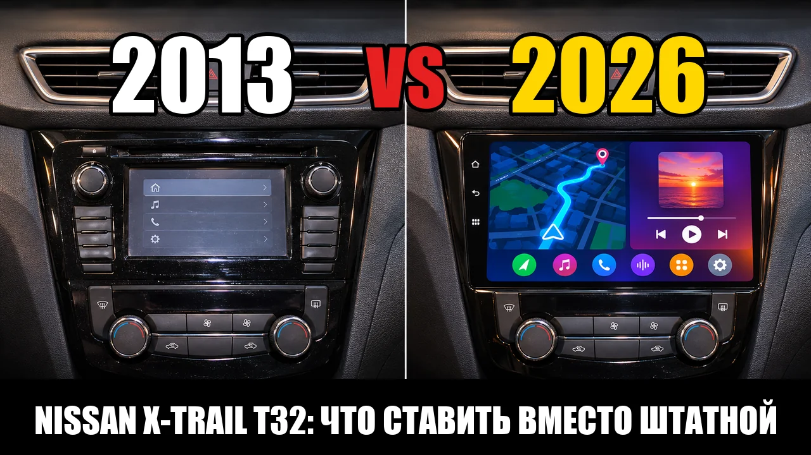
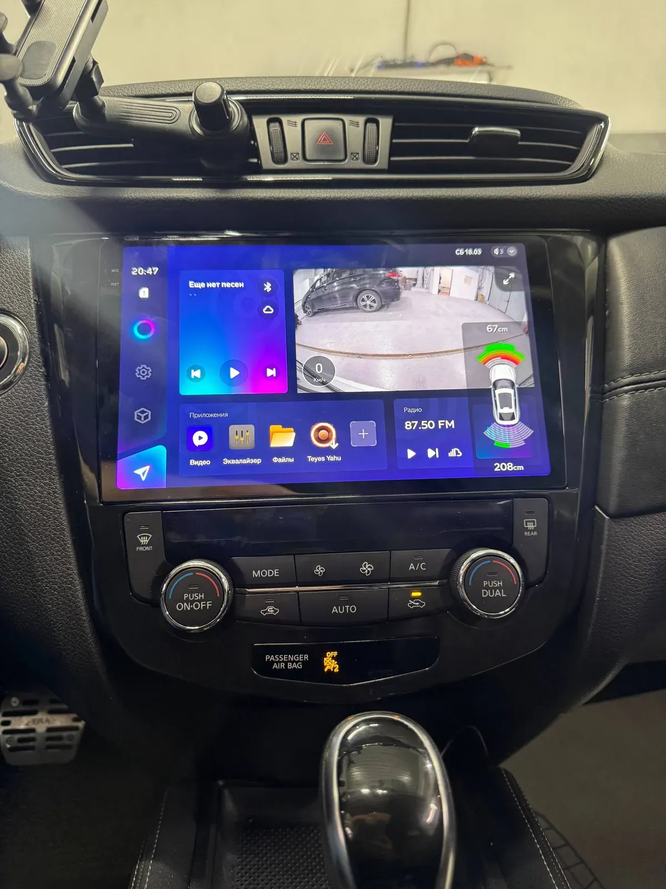
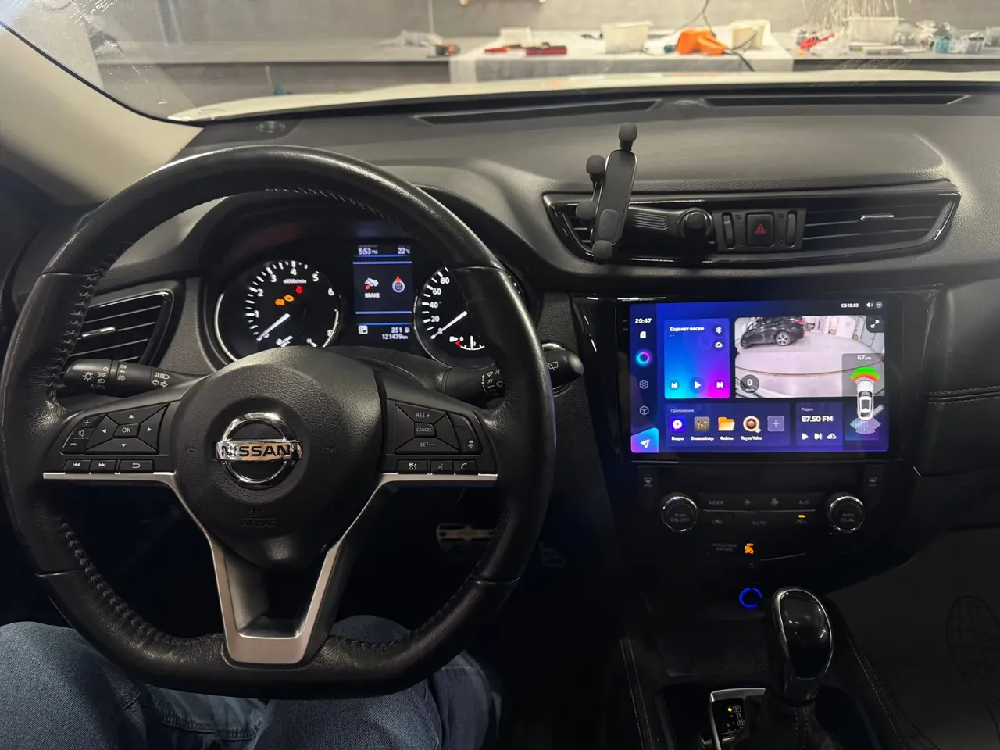
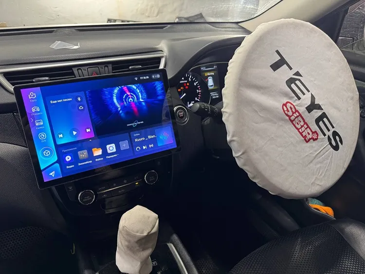

Лучшая магнитола для Ниссан Х-Трейл Т32: что ставить вместо штатной

Nissan X-Trail T32 ещё долго будет возить семью, а мультимедиа в нём устарела раньше кузова.
Держатель телефона на дефлекторе, провод зарядки через консоль, навигатор в ладони на светофоре. А если машина из Японии, к этому добавляются японское меню и радио, которое ловит не весь наш эфир.

Коротко: что ставить на X-Trail T32
Лучшее, что можно сделать с мультимедиа T32 сегодня, – Android-магнитола Teyes в штатную рамку. Экран встаёт на место старого блока между дефлекторами и климатом, климат остаётся на своих кнопках, кнопки на руле продолжают работать.
В каталоге TEYES Sibir под X-Trail 3 2013–2022 стоит Teyes CC3L в четырёх вариантах рамки – от 26 800 до 30 100 ₽. Это цены на сайте 18.11.2026 со скидкой за наличный расчёт, установка головного устройства – от 4 500 ₽. Мы ставили на T32 и старшие модели: CC3 2K, в том числе с экраном 13 дюймов, и CC4 Pro.
Какой у вас X-Trail: Россия или Япония
Третье поколение показали в 2013 году во Франкфурте. В Японии его начали продавать в декабре 2013-го, в Европе – летом 2014-го. С этого поколения X-Trail и американский Nissan Rogue – одна и та же машина.
- Российские машины собирали в Санкт-Петербурге: сборка стартовала 9 декабря 2014 года, продажи – в марте 2015-го. Моторы – бензин 2.0 (144 л. с.) и 2.5 (171 л. с.), дизель 1.6 (130 л. с.). Руль левый.
- Обновлённый X-Trail в Петербурге выпускают с 29 октября 2018 года. Изнутри его узнаете по рулю со скошенным низом – как на фото ниже.
- Японские машины – с правым рулём. В Японии обновление вышло в июне 2017 года, а с мая 2015-го там продавали и гибрид.
У предыдущего X-Trail T31 другая панель: серебристая консоль и три круглые ручки климата под экраном. Если у вас такая, вам нужен другой комплект.
Что стояло в машине с завода
Россия, 2015 год. Комплектации XE, SE, SE+, LE и LE+. В базовой – аудиосистема с четырьмя динамиками, в топовой – NissanConnect 2.0 с экраном 7 дюймов и система кругового обзора.
Россия после обновления 2018 года. Новый блок мультимедиа, навигация с интерфейсом «как в мобильных приложениях». Машину предлагали и со встроенным Яндекс.Авто: навигатор, музыка, погода.
Япония. Навигацию NissanConnect с 2015 года ставили за доплату на заводе, после обновления 2017 года в описании модели уже дилерская навигация. Круговой обзор с распознаванием движущихся предметов шёл опцией.
Что раздражает владельцев в 2026 году
Простая магнитола. В базовых машинах карт на экране нет, навигатор живёт в телефоне. Отсюда держатель на дефлекторе и провод через салон.
Японская машина. Меню и навигация на японском, карты – японские. FM в Японии сейчас 76–95 МГц, до 2011 года было 76–90, наш эфир – 87,5–108 МГц. Штатный приёмник рассчитан на свой диапазон. Импортёры ставят конвертер, но весь наш диапазон он не перекрывает.
Парковка. Владелец X-Trail 2019 года заказал у нас всё сразу: магнитолу, переднюю и заднюю камеры и восемь парктроников. Картинка и схема датчиков теперь на одном экране.
Три пути и какой выбрать
Оставить штатную и ездить с телефоном. Бесплатно, но держатель и провод остаются с вами.
Русифицировать японский блок. Если перевод для вашего блока есть, меню станет русским. Карты Японии и японский диапазон радио никуда не денутся.
Поставить Teyes в штатную рамку. Наши карты и станции, интернет по SIM-карте, CarPlay и Android Auto, камеры и парктроники на одном экране. Этот путь закрывает все пункты из списка выше.
Какую Teyes ставить на X-Trail T32
Teyes CC3L – то, что есть в каталоге под T32 с ценой: память 4/32 ГБ, экран IPS 1280×720, 8 ядер, слот под SIM-карту с 4G, Wi-Fi, процессор звука DSP, CarPlay и Android Auto, GPS и ГЛОНАСС, вход камеры AHD 1080p.
Цены на 18.11.2026: AB F1 – 26 800 ₽, AB F2 – 28 300 ₽, C F1 – 28 600 ₽, C F2 – 30 100 ₽. Буквы – под штатную панель: AB для машин с магнитолой без экрана или с маленьким экраном, C – для машин со штатным экраном 7 дюймов. Какая рамка и проводка нужны вашей машине, скажем по фото центральной панели.
CC3 2K и CC4 Pro. Их мы тоже ставили на T32, CC3 2K – и с экраном 13 дюймов. В каталоге под T32 этих комплектов с ценой нет, считаем по фото панели.
Что останется от штатного
- Кнопки на руле. На нашей работе с CC3 2K 13 дюймов сохранились кнопки руля и вывод служебной информации.
- Климат. Работает своим блоком под экраном, как раньше.
- Камеры и парктроники. Новые камеры и схема датчиков выходят на экран Teyes.
- Круговой обзор. Если он у вашей машины есть, скажите сразу: от него зависят комплект и настройка.
- Панель. Экран встаёт в штатное место, панель не пилят.

Наши работы по X-Trail T32
X-Trail 2019 года, Teyes CC3 2K, две камеры и восемь парктроников. Экран встал над штатным блоком климата. На рабочем столе Teyes – окно камеры, радио и схема парктроников с расстоянием до препятствия в сантиметрах. Страницы этой работы на сайте пока нет, фото – выше.
X-Trail T32 с правым рулём, Teyes CC3 2K 13 дюймов. Работа заняла один день, экран встал в штатное место, кнопки на руле сохранились. Смотреть работу на сайте

X-Trail T32, Teyes CC4 Pro. Старшая модель Teyes с более мощным процессором, большой экран в штатной рамке. Смотреть работу на сайте
Все варианты для X-Trail по поколениям и рынкам – на одной странице: магнитола и мультимедиа Nissan X-Trail. Комплект CC3L под X-Trail 3 с ценой – в каталоге.
TEYES Sibir, официальный установочный центр Teyes в Новосибирске: Сухарная 35 корпус 13, пн–пт с 11:00 до 19:00.